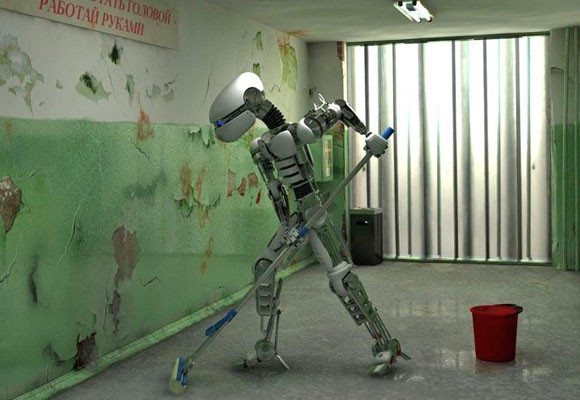
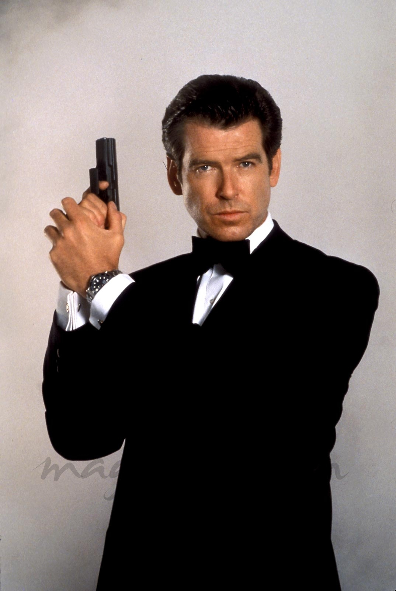
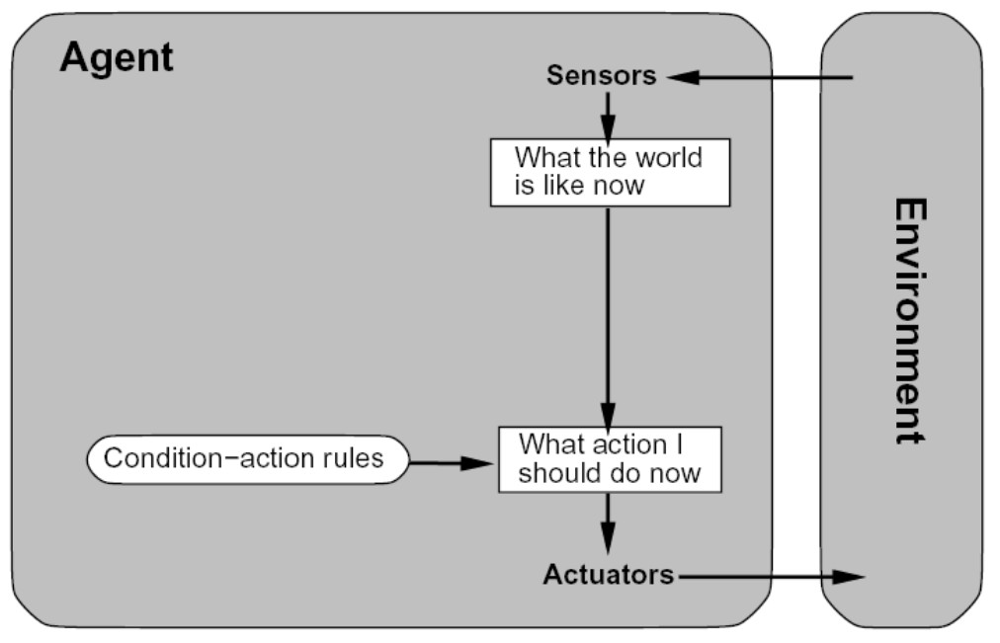
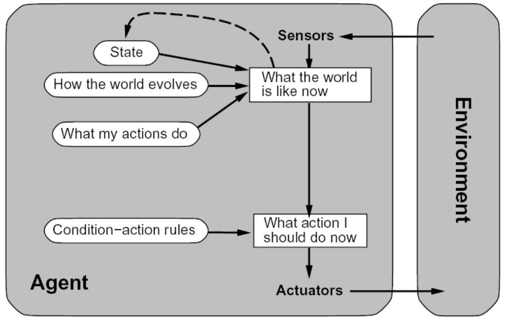
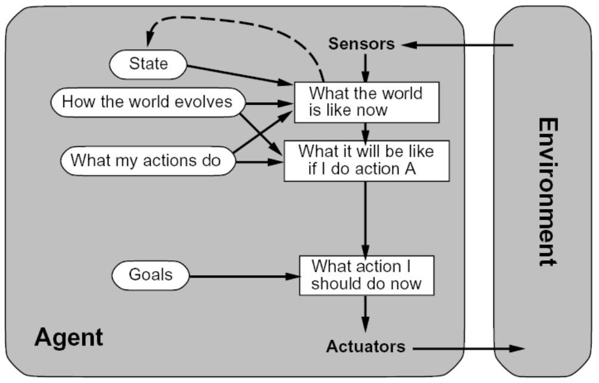
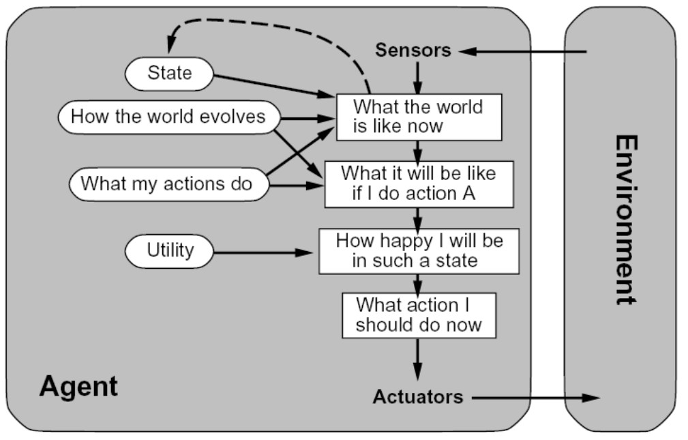
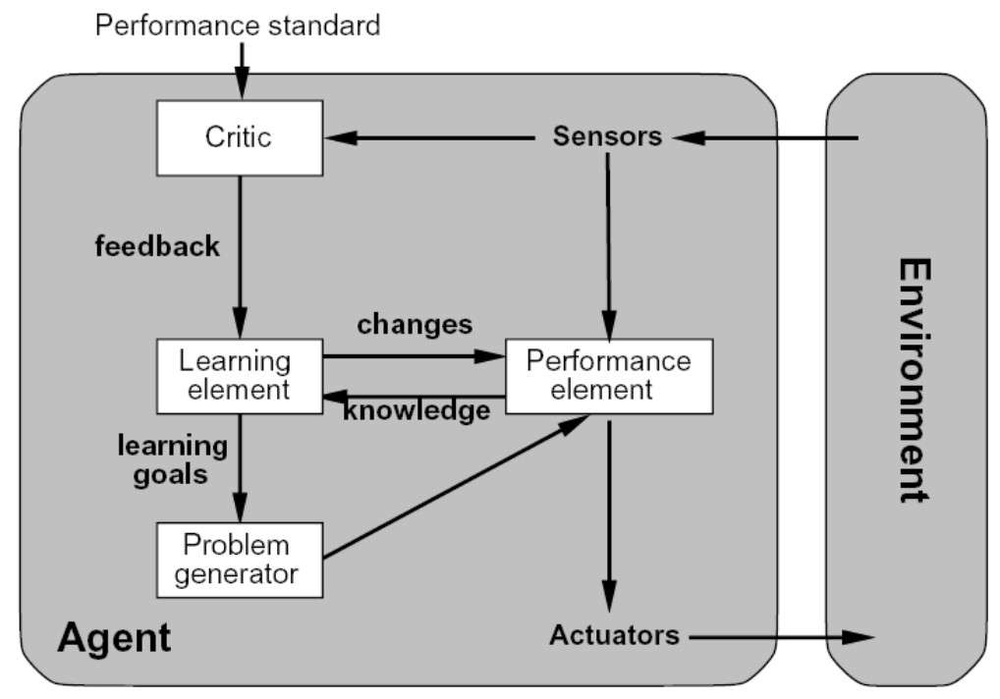

Inteligencia Artificial
Claudio Vaucheret
Agentes
Created: 2022-08-24 mié 18:50
Agente Racional
¿Hacia dónde vamos según las definiciones de IA?
- De las definiciones de Inteligencia Artificial, nos enfocaremos en aquella que tiene que ver con el Comportamiento racional.
- Nos concentraremos en:
- los principios generales de los Agentes Racionales y
- sobre los componentes para construirlos.
Pero ¿qué es un agente racional?
Agente Racional
Un agente racional es aquel que hace las acciones correctas
Agente Racional
- ¿Qué significa hacer la acción correcta?
Una acción correcta, es aquella que causa que el agente sea más
Exitoso
- Una secuencia de acciones afectan al ambiente que pasa por una secuencia de estados
- Medida de performance criterio objetivo que establece cuán exitoso es el comportamiento del agente.
Agente Racional
- ¿Cómo definimos esa medida de performance?
- Evalúa cuán deseable es la secuencia de estados del ambiente generados por la secuencia de acciones del agente.
|  | Cantidad de veces que recolecto basura en un lapso de tiempo T. Tres puntos por cada oficina limpia en cada paso del tiempo |
Agente Racional
Medidas de perfomance de
- Robot de fútbol
- Clasificador de manzanas rojas y verdes
- Juega a las damas
- Video Game: juego de rol
- Agente en moto de reparto
- etc.
Agente Racional
Medida de Performance
Es mejor... diseñar las medidas de performance de acuerdo a lo que uno realmente quiere en el ambiente en vez de considerar la forma en que uno piensa que el agente se debería comportar.
Agente Racional
Racionalidad
en un momento dado depende de:
- La medida de performance que define un criterio de éxito.
- El conocimiento a priori del ambiente
- Las acciones que el agente puede ejecutar
- La secuencia de percepciones del agente hasta el momento.
Agente Racional
Agente Racional
- Para cada posible secuencia de percepciones, un agente racional elige la acción
- que maximiza el valor esperado de la medida de perfomance,
- dada la evidencia provista por la secuencia de percepciones
- y el conocimiento predefinido que el agente tiene.
Racionalidad \(\not =\) Omnisciencia
Agente Omnisciente Es aquel que conoce el resultado real de sus acciones y puede actuar de acuerdo a ello.
| La omnisciencia es imposible en la realidad Racionalidad \(\not =\) clarividencia |
La definición que dimos de agente racional no requiere omnisciencia porque la elección racional depende de la secuencia de percepciones.
Racionalidad
Exploración
- Reunir información antes de elegir la acción adecuada.
Ejemplo del cruce en donde no miro para ambos lados.
Autonomía
- Toma decisiones en forma independiente. Sus decisiones y sus acciones están bajo su propio control. Tiene sus propias creencias, deseos e intenciones, es decir, no es sirviente de otros. Tiene su propia agenda. Si un agente confía en el conocimiento a priori de su diseñador en vez de en sus percepciones entonces se dice que le falta autonomía.
Aprendizaje
- A medida que el agente gana experiencia, debe modificar y aumentar su conocimiento a priori. Un agente aprende cuando mejora la performance de tareas futuras después de hacer observaciones sobre el mundo.
Estructura de un Agente
Agente = Arquitectura + Programa
- "reales"
- "artificiales"
- software agents or "softbots"
|  |
Tipos de Agentes
- Agente reflexo simple
- Agente reflexo con estado interno
- Agente orientado a metas
- Agente orientado a la utilidad
- Agente que aprende
Agente Reactivo o Reflexo Simple
- Agentes que simplemente reaccionan por un estímulo del ambiente.
- Seleccionan una acción en base a la percepción actual, ignorando el resto de la historia de percepciones (el pasado): \[Ag: P \longrightarrow A\]
- No mantienen ninguna representación explícita interna del ambiente.
- Las decisiones son implementadas en alguna forma de mapeo directo entre situación-acción o condición-acción.
Agente Reflexo Simple

Agente Reactivo o Reflexo Simple
Agente Reactivo o Reflexo Simple
Comportamiento es dirigido por el principio de estímulo-respuesta característico de los reflejos de humanos, animales y plantas.
Ventajas
- Simplicidad.
- Tratabilidad computacional.
Limitaciones
- Sólo trabajan bien si la acción correcta puede determinarse en base a la percepción actual. (ambiente totalmente observable).
- Posibilidad de loops infinitos bajo ambientes parcialmente observables.
- Incapacidad de analizar la consecuencia futura de las acciones.
- Difíciles de escalar.
Agente Reflexo con Estado Interno
Esto es muy simple, y normalmente se necesita un estado interno para
- ver como cambia el ambiente independientemente del agente y
- como afectan las acciones del agente al ambiente.
Agente Reflexo con Estado Interno

Agente orientado a Metas
- El agente necesita información de sus metas para escoger qué acciones las pueden cumplir
- Pueden usarse técnicas de búsqueda y planificación.
- Esto lo puede hacer más flexible (ej., si está lloviendo ajustar la efectividad de los frenos).
Agente orientado a Metas

Agente orientado a la Utilidad
- Las metas por si solas no son suficientes para generar un comportamiento de buena calidad.
- Para esto necesitamos una medida de utilidad (función que mapea un estado o secuencia de estados con un número real).
Agente orientado a la Utilidad

Agentes que Aprenden
La idea es que las percepciones no se usen sólo para actuar, sino también para mejorar su desempeño en el futuro.
Agentes que Aprenden

Características Intrínsecas
| Propiedad | Rango de Valores |
|---|---|
| Duración | Transitorio a Larga Vida |
| Nivel de Cognición | Reactivo a Deliberativo |
| Construcción | Declarativo a Procedural |
| Movilidad | Estático a Itinerante |
| Adaptabilidad | Fijo a Entrenable a Autodidacta |
Características Externas
| Propiedad | Rango de Valores |
|---|---|
| Ubicación | Local a Remota |
| Autonomía Social | Independiente a Controlada |
| Sociabilidad | Autista, Dispuesto, Responsable, Miembro de un equipo |
| Amigabilidad | Cooperativo a Competitivo |
| Interacciones | Logística: directo o vía facilitadores Estilo: con agentes / con el mundo / ambos Nivel Semántico: comunicaciones declarativas o procedurales |
Inteligencia Artificial Distribuida
- Muchos problemas:
- pueden o deben ser resueltos en forma distribuida, ya que la información está distribuida físicamente
- pueden ser resueltos en forma concurrente
- que están débilmente acoplados pueden ser resueltos en forma cooperativa por diferentes agentes.
Así aparece la idea de Inteligencia Artificial Distribuida y de Sistemas Multiagente
Inteligencia Artificial Distribuida-DAI
DAI
DAI es el estudio, construcción y aplicación de sistemas multiagente, esto es, sistemas en los cuales varios agentes inteligentes interactúan persiguiendo algún conjunto de objetivos o ejecutando algún conjunto de tareas.
Sistemas Multiagente
Un Sistema Multiagente es uno que consiste de un número de agentes, que interactúan entre ellos. En el caso más general, los agentes actúan en favor de sus usuarios con diferentes metas y motivaciones.
Sistemas Multiagente - MAS
Habilidades Sociales de los MAS
- Coordinación: orientada a la meta o a la tarea a realizar. Ej.: cuando dos agentes requieren de un recurso.
- Cooperación: varios agentes tratan de combinar sus esfuerzos para lograr un objetivo en grupo. Ningún agente puede en forma solitaria lograr el objetivo o bien la cooperación hace obtener mejores resultados (por ejemplo, obtener resultados en forma más rápida).
- Competición: varios agentes tratan de obtener lo que solo algunos de ellos pueden tener.
- Negociación: varios agentes tratan de obtener su mayor beneficio logrando un acuerdo. Típicamente involucra una oferta y contraoferta, con compromisos hechos por los participantes.
Sistemas Multiagente
Distinguimos los Problemas Micro y Macro
- Diseño del Agente ¿Cómo construimos agentes que son capaces de acciones independientes y autónomas, con el objetivo de llevar a cabo en forma exitosa, tareas que le delegamos?
- Diseño de la Sociedad ¿Cómo construimos agentes que son capaces de interactuar (cooperando, coordinando, negociando) con otros agentes, con el objeto de llevar a cabo en forma exitosa, tareas que le delegamos, particularmente cuando los otros agentes no necesariamente comparten los mismos intereses/metas?
Agentes Inteligentes
Resumiendo \(\ldots\)
Un agente inteligente
- Es capaz de acciones autónomas flexibles, es decir:
- Reactividad: son capaces de percibir su ambiente y responder a cambios que ocurren.
- Pro-actividad: son capaces de exhibir funcionamiento orientado a un objetivo, tomando la iniciativa
- Habilidad social: son capaces de interactuar con otros agentes (o humanos)
Con el fin de satisfacer sus objetivos.
SMA vs. OO
| Objeto | Agente |
|---|---|
| Ejecuta los métodos invocados | Autonomía de decisión |
| Flujo de control del llamante | Flujo de control propio |
| Encapsula estado y comportamiento | Encapsula la activación del comportamiento |
| Estado: valor de variables | Estado mental: objetivos, creencias, \(\ldots\) |
| Comportamiento: salida a partir de una entrada | Comportamiento: cómo decidir lo que hacer |
| Mensajes invocan procedimiento | Interacciones: actos de habla (intencionalidad) |
| Asociaciones entre objetos | Organización: relaciones sociales entre agentes |
SMA vs. Sistemas Expertos
| Sistemas Expertos | Agentes |
|---|---|
| Sistemas cerrados | Interactúan con el entorno |
| Sistemas de decisión centralizados | Distribución de la toma de decisiones: Comportamiento emergente |
| Interacción con el usuario bajo petición del usuario | Mayor grado de interacción con el usuario |
| Interacción con otros agentes |
Sobre la utilidad de los agentes
La primera pregunta que habrá que plantearse cuando se va a realizar un sistema es:
¿Hace falta utilizar agentes?
o bastaría con objetos componentes ...
Aplicaciones
- Servicios de información en Internet
- Recuperación y extracción de información
- Comercio electrónico
- Mercado de servicios electrónico
- Negociación
- Equipos móviles y PCs en el hogar
- Redes públicas de telecomunicaciones
- Provisión de servicios bajo demanda
- Descentralización del control y gestión de redes
- Gestión de procesos (workflow)
- Simulación de sistemas dinámicos
- Juegos (bots)
- Robótica
- Etc.
Sobre la utilidad de los agentes
- En el diseño de sistemas distribuidos los agentes proporcionan:
- Aspectos sociales
- Lenguajes y protocolos de comunicación de agentes
- Distribución de datos, control, conocimiento, recursos
- En el análisis de un sistema los agentes tienen un mayor grado de abstraccion que los objetos o componentes:
- Mayor autonomía y capacidad de decisión
- Varios componentes heterogéneos que mantienen relaciones entre ellos y con escalas de tiempo diferentes
- Modelado de sistemas naturales y sociales
Sobre la utilidad de los agentes
- Facilitan la evolución:
- Adaptación a modificaciones y al entorno
- Escalabilidad: añadir agentes para soportar mayor carga de trabajo
- Añadir/quitar funcionalidad en tiempo de ejecución
- Desarrollo incremental
- Sistemas abiertos: capacidad de aceptar nuevos elementos
- Pero no siempre son la solución ideal
- Ausencia de control/visión global del sistema
Agentes
¿Qué es un Agente Inteligente?
- Son entidades:
- perciben el ambiente
- actúan en él
- razonan
- se comunican con otros agentes
Especificación del Ambiente de Tarea: PEAS
- P: Medida de Performance
- E: Ambiente que el agente enfrenta.
- A: Actuadores que utiliza el agente para interactuar con el ambiente
- S: Sensores con los que percibe el agente
Ejemplo:Taxi Automático
- Medidas de Perfomance? Seguridad, destino, comodidad etc
- Ambiente? Calles locales/autopistas, tráfico, peatones, clima, etc
- Actuadores? Acelerador, display, volante, freno, bocina,
- Sensores? Video, velocímetro, sensores del motor, GPS, etc
Propiedades de los Ambientes
Completamente Observable vs. Parcialmente Observable
Un ambiente es completamente observable si los sensores del agente detectan todos los aspectos relevantes para decidir que acción debe llevarse a cabo. Ej Poker VS. Damas
Ejercicios
- Juego de ajedrez
- Juego de robot de tipo humanoide cuyos ojos son cámaras
- Taxista
- Internet
Propiedades de los Ambientes
Determinístico vs. Estocástico
Si el siguiente estado del ambiente está completamente determinado por el estado actual y la acción ejecutada por el agente, luego el ambiente es determinísitico. Si otros factores influyen en el próximo estado del ambiente, éste es estocástico.
Ejercicios
- Un softbot que simula a una persona en un juego de computadora
- Juego de dados
- Solitario
Propiedades de los Ambientes
Agente Único vs. Multi-agente
La resolución involucra un único agente o a un sistema multiagentes(MAS). En un MAS, debemos identificar qué identidades deben ser vistas como agentes o simples objetos. La clave está en si el comportamiento de la entidad B se describe mejor como la maximización de una medida de performance cuyo valor depende del comportamiento de la entidad A.
Los ambientes multiagente puede ser:
- Competitivos: ajedrez, taxi (competimos para estacionar :)
- Cooperativos: taxi (cooperamos para no chocar :).
Propiedades de los Ambientes
Episódico vs. Secuencial
En un ambiente episódico, la experiencia del agente está dividida en episodios atómicos. En cada episodio, el agente percibe y ejecuta una acción simple y el siguiente episodio no depende de las acciones tomadas en episodios anteriores. Las tareas de clasificación pueden clasificarse como episódicos. Ej: Ruleta Vs Ajedrez
Ejercicios
- juego de damas.
- Brazo mecánico.
- el detector de basura en las botellas de una cervecería
Propiedades de los Ambientes
Estático vs. Dinámico
Si el ambiente puede cambiar mientras que el agente delibera, luego el ambiente es dinámico. Ej. Civilization II VS. Age of Empires Si el ambiente no cambia con el pasaje del tiempo, pero la performance del agente cambia, luego decimos que el ambiente es semidinámico. Los ambientes dinámicos tienen dos consecuencias importantes: Un agente debe percibir continuamente, porque aún si no ha ejecutado ninguna acción entre los tiempos t0 y t1 , el agente no puede asumir que el estado del ambiente sea el mismo en t0 que en t1; Otros procesos en el ambiente pueden interferir con las acciones del agente, incluyendo las acciones de otros agentes.
Ejercicios
- Ajedrez
- Ajedrez con reloj
- juego de robots
- Internet
Propiedades de los Ambientes
Discreto vs. Contínuo
Esta distinción se aplica al estado del ambiente, al modo en que se maneja el tiempo y a las percepciones y acciones del agente.
Ejercicios
- juego de ajedrez
- Internet
- Calendrario y Celular.
Propiedades de los Ambientes
Conocido vs. No Conocido
Se refiere más al estado de conocimiento del agente sobre las leyes o reglas del ambiente. Diferente de parcial - completamente observable. Ejemplo, el solitario es parcialmente observable pero conozco las reglas, por lo que es conocido.
Ejemplos
| Solitario | Backgammon | Ajedrez con reloj | Taxi | |
|---|---|---|---|---|
| Observable | No | Si | Si | No |
| Deterministico | No | No | Si | No |
| Episódico | No | No | No | No |
| Estático | Si | Si | Sem | No |
| Discreto | Si | Si | Ni:) | No |
Referencia Bibliográfica
 S. Russell y P.Norvig
Artificial Intelligence: A Modern Approach (Third Edition).
Capítulo 2
2009
S. Russell y P.Norvig
Artificial Intelligence: A Modern Approach (Third Edition).
Capítulo 2
2009
M. Wooldridge
An Itroduction to Multiagent Systems. Second Edition
Capítulo 2 (hasta sección 2.4 inclusive) 2009
G. Weiss
Multiagent Systems: A modern approach to Distributed Artificial Intelligence. Second Edition
Prólogo - Capítulo 1 2000